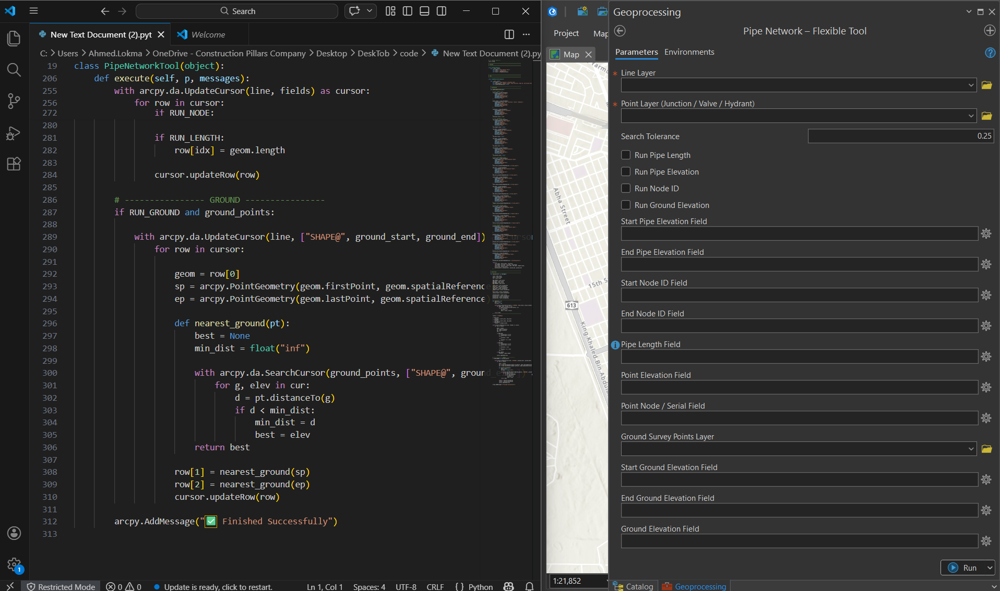
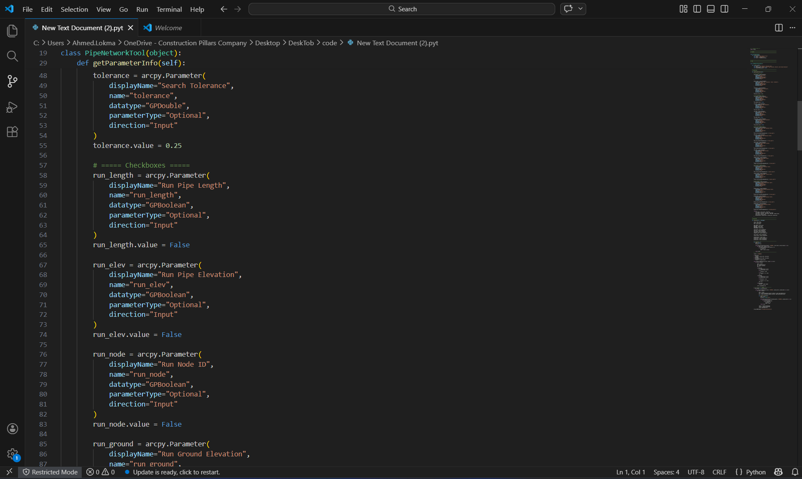
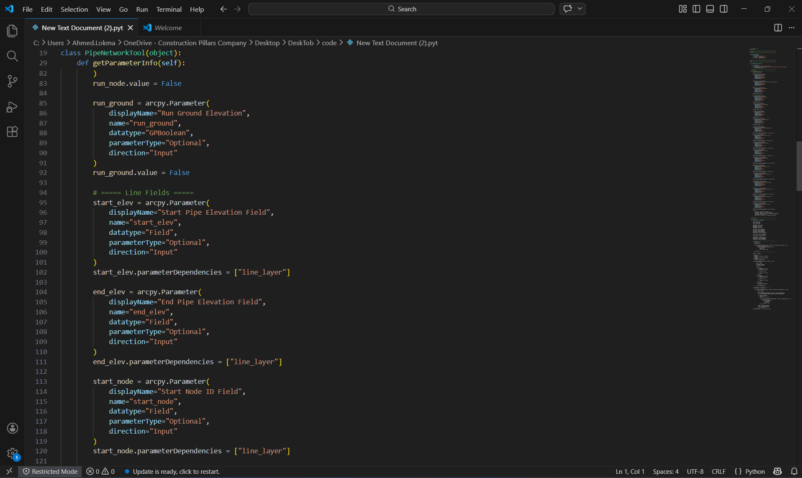
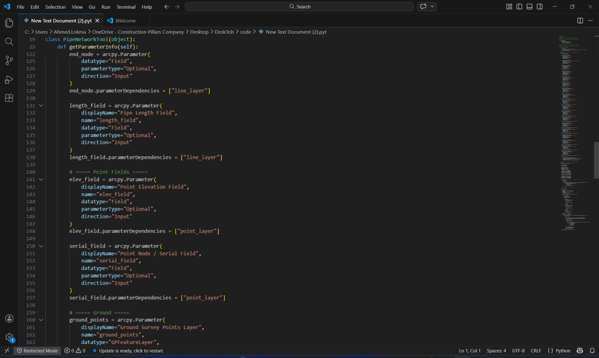
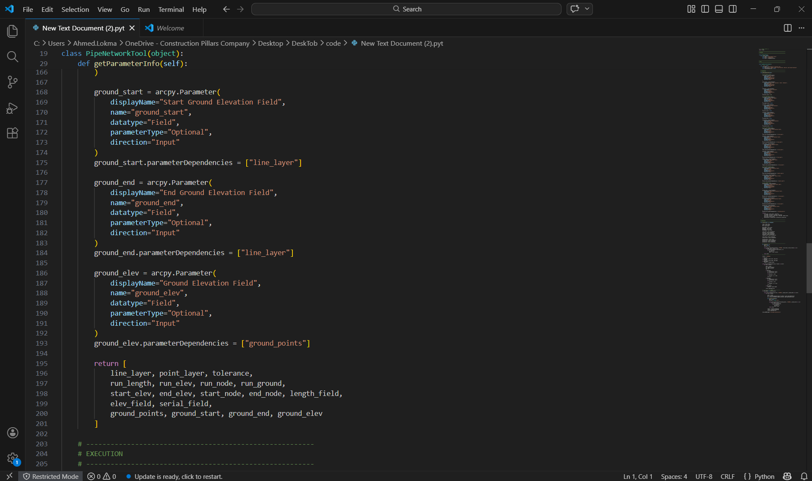
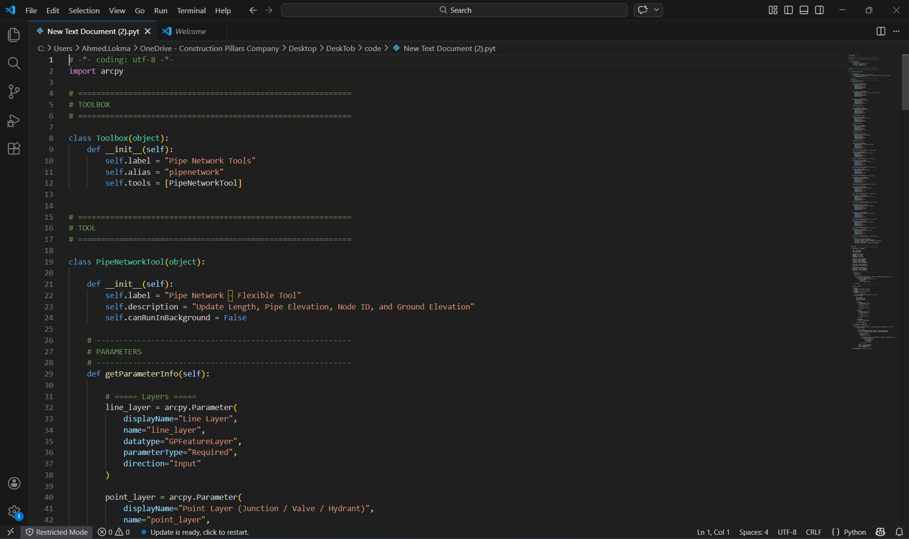

A custom Python and ArcPy tool built to automate the entire process of classifying and formatting GIS infrastructure data to fit the National Water Company's schema — eliminating hours of repetitive manual work.
Impact
Project Gallery






About the Tool
Preparing GIS infrastructure data to meet NWC schema requirements was a slow, repetitive manual process. Each project required classifying and reformatting large datasets — a task prone to inconsistency and human error when done by hand.
Built a custom Python tool using ArcPy that automates classification, field mapping, and data formatting to match NWC's required GIS schema. What previously took significant manual effort now runs automatically — consistently and correctly every time.
Technical Details